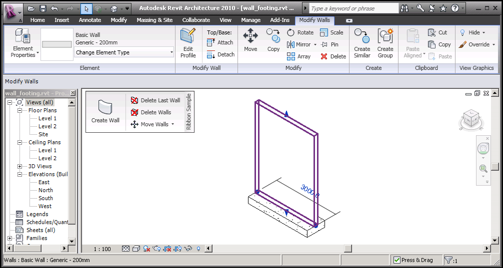

Add-In Ribbon Panel and Loading One Single Type
The Revit ribbon is context sensitive, so it switches to specific tabs under specific circumstances. For instance, if I select a wall in the model, it switches to the Modify Walls tab. This may seem like a limitation for add-ins, since all add-in commands are placed in the Add-Ins tab.
Imagine I have an add-in which provides a command specific to walls. Ideally, I would like my command to be added to the walls Modify Walls tab. That is unfortunately currently not possible.
One thing to be aware of, however, is that each individual panel of the ribbon can be dragged out of the ribbon area onto the graphics screen, in which case it remains visible even when tabs are switched. So as a partial workaround, I can place my add-in's wall specific commands in a separate panel and then drag that out onto the graphics screen to have simultaneous access to the standard modify walls commands and my add-in wall commands. Here is an example showing a highlighted selected wall, the activated Modify Walls tab, and the panel defined by the Revit SDK Ribbon sample floating on to the graphics screen for immediate access to those commands as well:

Here is another question that pops up now and then, and once again the strong hint to look at the API documentation in the SDK when searching for information:
Question: Can I use the Revit API to just load one single selected type of a family into a project? A family may define many types, but the project only requires one of them. Is it possible to just load just that one type?
Answer: If you look in the Revit API help file for "load family", the first hit returned is the Document.LoadFamily method. It loads an entire family and all its types or symbols into the document. The remarks to this method include the following note:
Loading an entire family may take a considerable amount of time and memory. It is recommended that you use LoadFamilySymbol and only load those symbols that you need. The path to the installed Autodesk Revit family files can be found by using the Application.Options object and its methods.
So, as it says, you can use the API method LoadFamilySymbol to load the specific family symbol that you are interested in instead of the entire family.